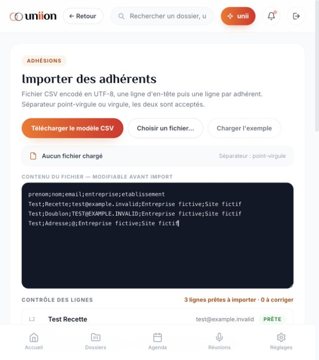

Étape 1 — bilan de fin de campagne de recette du prototype 23 octobre 2026 Verdict : campagne complémentaire réalisée et réserves identifiées ; aucune validation globale « tout fonctionne ». Les cas bloqués ci-dessous sont clôturés administrativement comme NON VALIDÉS, pas transformés en succès. La conformité complète et le passage en production restent bloqués. Cette passe : 22 captures ; 31 tests de logique isolés (23 réussis, 8 échecs documentés) ; 20 tests de non-régression et 4 tests d’exports réussis. Les tests isolés exécutent la classe du prototype avec stockage et horloges de test : ils ne remplacent pas la recette navigateur. L’auto-test intégré des extensions est réussi : 8 pages sans thème identiques, 6 documents avec types de blocs préservés en Markdown, 72 rendus de styles sans exception, 6 thèmes et 7 sections contrôlés. Cela ne certifie pas la mise en page parfaite de chaque document. Interface : cas limites CSV, création vide d’un dossier puis renommage et avancement, contrôle d’un sondage vide, variante Oui/Non, sauvegarde et reprise du brouillon à l’étape 3 après rechargement, groupes sans nom/membre et annulation, alerte vers le bon dossier, page retournée et aperçus mobile/tablette, préparation puis annulation de publication, auto-test des extensions, conservation du dossier après rechargement. Les deux objets fictifs créés dans le navigateur sont laissés identifiables : dossier « RECETTE CLOTURE — dossier fictif » en cours et brouillon de sondage « RECETTE — préférez-vous une réunion le matin ? », non diffusé. Aucun groupe créé par cette passe UI, aucune publication ni invitation envoyée. Les suppressions testées l’ont été uniquement dans une instance de code isolée. La marque testée par code ne touche ni la marque du navigateur ni les fichiers du prototype. IA : les preuves antérieures montrent une génération réelle de PV et un test de connexion aboutis. Cette passe n’ajoute pas d’appel réel au modèle. Les défauts d’erreur et de navigation tardive F18/F27 restent ouverts. Intégrité : 324 fichiers de référence conformes au manifeste ; les 5 fichiers publics du prototype de travail sont identiques à la référence. Aucun changement de design, UX ou code applicatif. Points d’arbitrage : la création d’un dossier vide est autorisée avec le nom « Nouveau dossier sans titre » ; décider si ce brouillon automatique est voulu. La console mobile tronquée nécessite un arbitrage d’adaptation responsive. Les dates de démonstration et les promesses de conformité affichées ne doivent pas être interprétées comme des services opérationnels. La matrice des 87 sections conserve les niveaux de preuve antérieurs et les réserves. Une section inspectée ne devient pas intégralement testée ; cette campagne ne revendique pas une couverture exhaustive de toutes les combinaisons de saisie.
Bloqué par environnement et mise en page à contrôler
window.print() a ouvert une fenêtre native bloquant les interactions. Le contrôle natif de Codex est interdit par l’outil ; fermeture réalisée par l’utilisateur. Aucun PDF final récupéré ou vérifié. Le PV signale déjà un dépassement de page.
Pour lever : Exporter via un navigateur disposant d’un dialogue PDF pilotable, puis contrôler que toutes les sections sont présentes.
Non validé sur matériel réel
Les dimensions et aperçus testés ne sont pas des iPhone/iPad/Android réels. Permissions micro, clavier tactile et enregistrement physique non exercés. La conservation audio est de toute façon absente (F22/F26).
Pour lever : Implémenter le stockage et la lecture audio, puis effectuer une recette physique avec fichier et enregistrement fictifs.
Bloqué par services absents ou simulés
Les changements locaux et messages de succès ne prouvent ni réception d’invitation/email/push, ni validation indépendante, ni signature opposable, ni paiement. Pas de destinataire ou transaction réelle utilisée.
Pour lever : Brancher les services et comptes de test ; tester chaque effet observé côté destinataire.
Bloqué par implémentation simulée
F20/F23 : cache et dépôt/restauration de fichiers non établis par le prototype. Les octets des pièces ne sont pas conservés par le dépôt simulé.
Pour lever : Implémenter fichiers, versions et cache ; retester intégrité et rechargement sans réseau.
Non établie
Les contrôles de rôle UI ne sont pas des permissions serveur. MFA, chiffrement, isolation des organisations et journaux de production ne sont pas démontrés par cette application locale.
Pour lever : Après développement du backend : tests d’accès croisés, isolation des données et intégration de production.
Anomalie confirmée dans le navigateur
Serveur arrêté : la fenêtre d’erreur apparaît et Réessayer échoue à nouveau comme attendu. Mais « REÇU PAR LE MODÈLE », « Payload masqué transmis » et « rien enregistré » restent affichés, tandis que la question figure dans l’historique.
Action exécutée, absence d’implémentation confirmée dans le code
Le bouton annonce un fichier généré. Le gestionnaire ag.evt.ics appelle uniquement flash() ; aucun fichier ICS n’est construit ou téléchargé (HTML, ligne 10979).
Limite confirmée par interaction et code
Synchronisation lancée serveur arrêté ; l’interface passe en cours. Le code bascule tous les documents en cache après 1,4 seconde sans requête ni stockage de fichier (lignes 13167–13175). Le lecteur préchargé s’ouvre encore ; cela ne prouve pas la disponibilité des PDF hors ligne. Le rechargement du banc aboutit à un refus de connexion. Ce dernier test porte sur le banc et ne constitue pas, seul, un test de cache de l’URL directe du prototype.
Anomalie d’accessibilité observée
Les cinq interrupteurs visuels de notification sont exposés comme « button » sans nom et sans valeur activé/désactivé dans l’arbre d’accessibilité. Ils ne sont pas suffisamment identifiables pour une navigation assistée.
Constat de code reproduit par test isolé
Le test de logique crée une réunion avec audio: kept et affiche « Enregistrement chiffré » même pour une simulation sans son. Les recChunks ne sont référencés que lors de la collecte ; saveRecording ne sauvegarde pas de contenu audio (lignes 8942 et 9014–9030). Aucun enregistrement réel n’a été effectué. Test complémentaire : importAudioFile/confirmImport conserve le nom et les métadonnées, pas les octets du fichier. Le message « Fichier chiffré et rattaché » ne prouve pas un stockage audio.
Limite déjà partielle, précisée par lecture du code
startUpload choisit un nom PDF prédéfini et fait progresser un compteur ; la restauration ne change que les métadonnées de version. Ce mécanisme ne teste ni la sélection d’un vrai fichier ni la conservation/restauration de ses octets (lignes 13488 et 14181–14207).
Anomalie visuelle confirmée par captures
À 390 px, la barre latérale fixe laisse une bande très étroite au contenu. À 768 px, les colonnes du journal débordent et sont coupées. Le journal est lisible à 1024 px. Les sept rubriques sont accessibles mais leur ouverture ne vaut pas validation visuelle.
Action exécutée et absence d’implémentation confirmée dans le code
Action exécutée. adm.exportLogs appelle uniquement flash("Export du journal généré (CSV signé)") à la ligne 10718 ; ni génération CSV ni signature.
Simulation confirmée
Le bouton affiche une écoute inscrite au journal, sans lecteur ni nouvelle entrée. Le gestionnaire listen ne fait que flash(), ligne 12756.
Anomalie reproduite
Après lancement du PV, navigation vers Formations et recherche. La réponse ouvre automatiquement docedit et interrompt le parcours courant. pvFromReunion appelle go sans vérifier la route, ligne 11264. Le PV lui-même a bien été généré.
Simulation confirmée
Le bouton devient Session demandée et affiche une transmission au bureau. fmRequest ne modifie que fmReq et affiche un toast, lignes 14313–14316. Retrait local exécuté ensuite.
Anomalie reproduite
Prise en main → Importer un CSV ouvre la liste Organisation & membres. Aucun sélecteur ni étape d’import. Destination confirmée par le gestionnaire ligne 13197.
Simulation confirmée
Aucun formulaire : le bouton affiche Signature enregistrée. toast_saved est un simple flash, ligne 13955.
Tests de logique isolés — reproduit pour adhérent et événement d’exemple
restore() fusionne les enregistrements sauvegardés avec les exemples manquants. Un adhérent ou événement issu des données initiales supprimé revient au rechargement. Périmètre confirmé : données initiales, pas toutes les créations utilisateur.
Interface + tests de logique isolés
@ accepté comme courriel ; doublons ne différant que par la casse acceptés dans un même fichier ; champ entre guillemets contenant un point-virgule mal découpé. Les lignes invalides n’ont pas été importées dans le navigateur.
Test de logique isolé + lecture de askReview()
askReview() attribue immédiatement le statut Relue alors que sa note indique une réponse attendue sous 24 h. Aucune validation d’un second utilisateur n’intervient.
Test de logique isolé uniquement
agCreate() accepte 2026-02-31 car il vérifie seulement le format. Le sélecteur natif peut empêcher cette saisie dans certains navigateurs ; aucun contournement UI n’a été tenté.
31 tests de logique · Script reproductible · 87 sections · Intégrité
